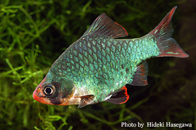
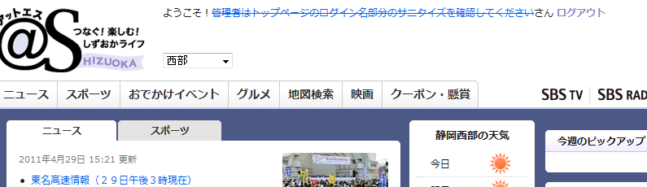
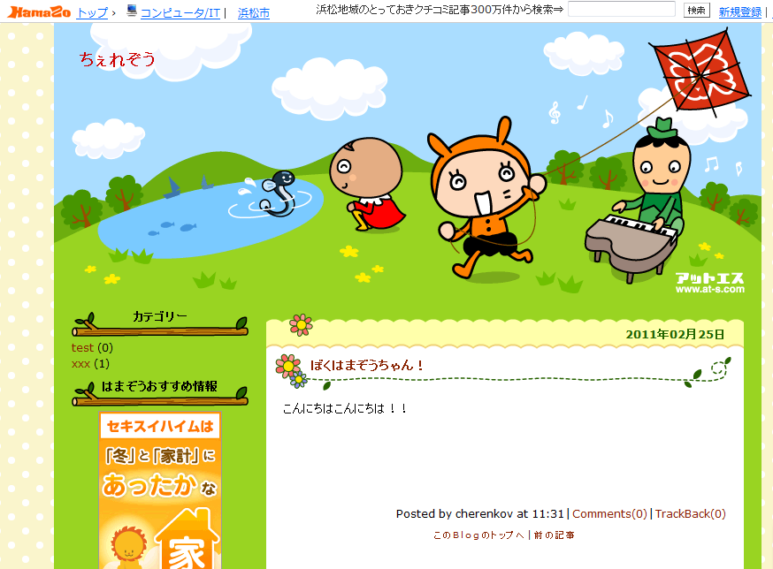
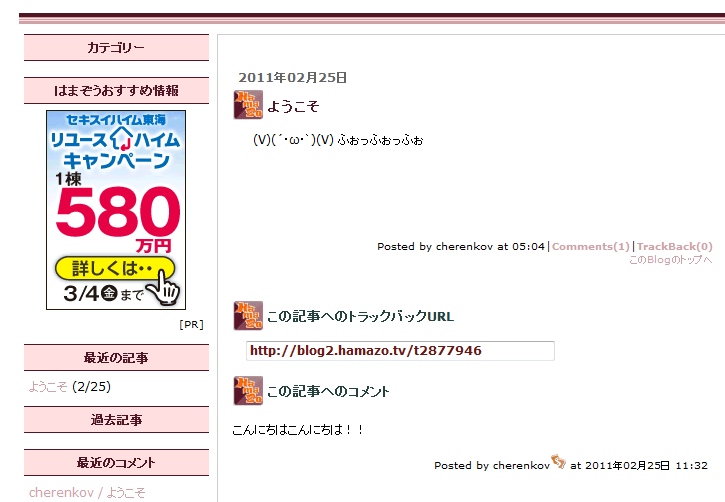
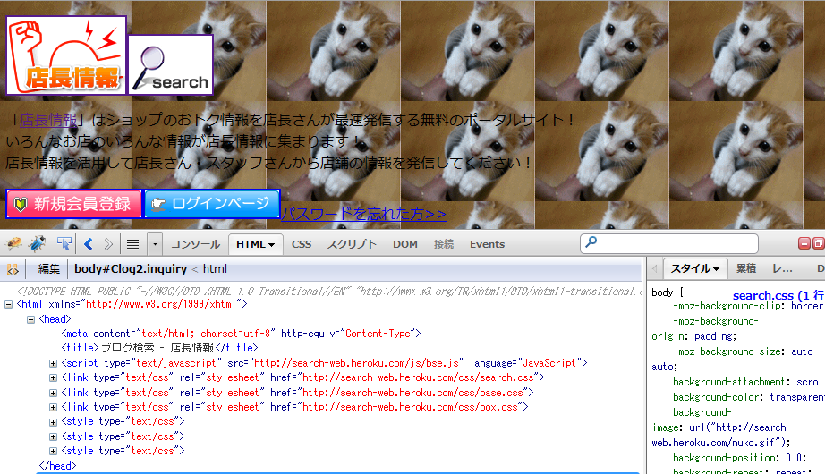
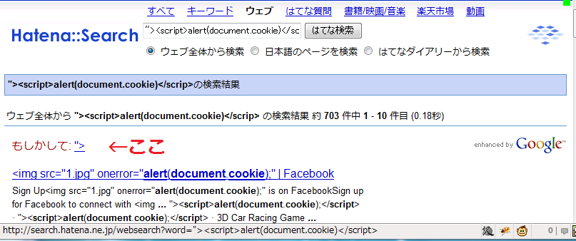
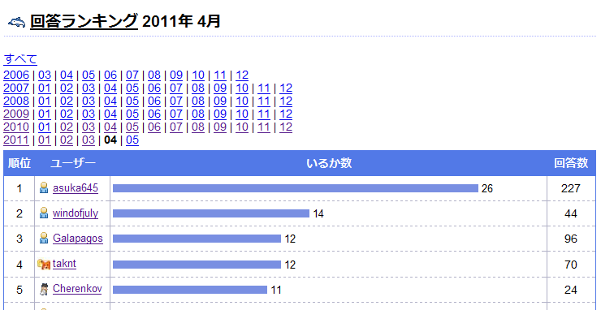

cherenkovのhamamatsu.rbポジションペーパー
経歴
ソフトウェアなんて習わなくてもできるわ、個人じゃ使えない装置使ってみたい → 半導体デバイス。
真空ポンプの大きな音こわい。ガス入れて高電圧かけて爆発しそう…。半導体ドン引き。
( ・ω・)∩ マイコンやりたいなー
三ε＿っﾟωﾟ)っ
〆(･ω･´;)
（-公- ）
( ﾟдﾟ)ﾎﾟｶｰﾝ
(つд⊂)ｺﾞｼｺﾞｼ
ｵﾜﾀ＼(^o^)／
( ´ﾟ∀ﾟ｀)いい夢見ろよ!
＿ﾉ乙(､ﾝ､)＿
＜(`・∀・´)＞ハッ! なにこれ、グリモン超便利！！
つづく
一番好きな魚

グリーンスマトラ。ルビーじゃなくてエメラルドだな。
最近好きなバンド
マーヤが一度シカトされる所がおもろい。
最近の活動
・脆弱性を報告したり。



ログインした状態で攻撃サイトを開くと勝手にコメントとブログ投稿ができた。CSRF。

URLパラメータでCSSのsrcが変化するので、http://seach-web.で始まる場所にCSSを置いてぬこのアニメGIFを並べてみた。
CSSのexpressionを使えばIE7までは任意のJavaScriptを実行することができる。

やったね！はてなのXSS見つけたらXSSハンターを名乗ってもいいよね！！
・人力検索はてなで集めたポイントでメタプログラミングRubyを買ったり。

4月は5位！
・某フェスのサイトをWordPressで作ったり。
・mixiアプリモバイルをCakePHPで作ってる。CakeはMVCの勉強にいい。Railsへの布石。
私とJavaScript
JSを使えば広告が消せる。画像のぶっこ抜きが楽になる。キーワードをハイライトできる。
パスワード入力が楽になる。無限スクロールでクリック数が減らせる。ウェブサイトを自由に改造できる。
子ノードを->親->親->前方の兄弟->子にappendとか相対的に操作できるDOM APIが楽しい。
ブラウザ本体の拡張できる。
こんなに実用的な言語を使わないのは損。
私とRuby
画像切り抜きサービスをHerokuとSinatraで作りたくて初めてRubyを使った。
ラジオ局のオンエア情報をぶっこ抜くためにMechanizeとNokogiriでクローリング。
JavaScriptの次に使ってみたい強力な言語はRubyの他になかった。
gem listが気持ちいい。余計な物は入れたくない。
RackとかEventMachineを使いたかった気がする。
無料PaaSな公開環境重要。Herokuの次は、Dot Cloudかな。
PHPならcloudControlよかった。CakePHPが動いた。PHP FogはAWS不調のあおりを受けて(?)長いこと動かせない期間があって信用ダウン。
Hamamatsu.rbに参加しない理由
ない。楽しい仲間とぽぽぽぽーんしたいでしょう！
Hamamatsu.rbでやりたい事
空白期間の実績作り。
空海も謎の空白時代に修行したんだよ？
パワフルな先輩たちの技を盗みまくる。